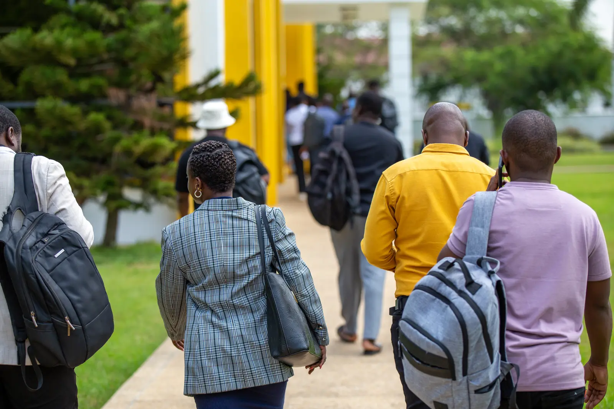
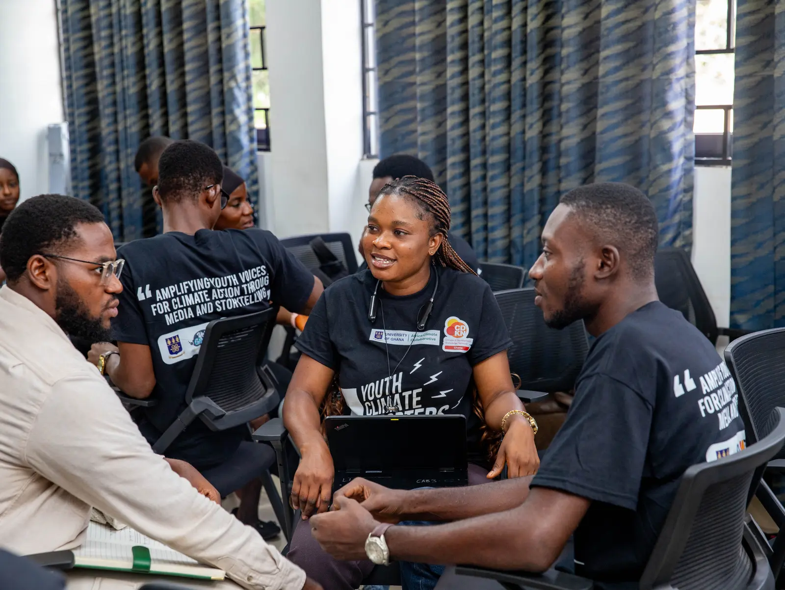
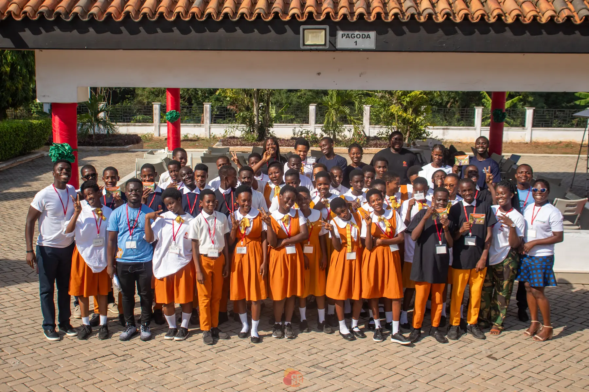
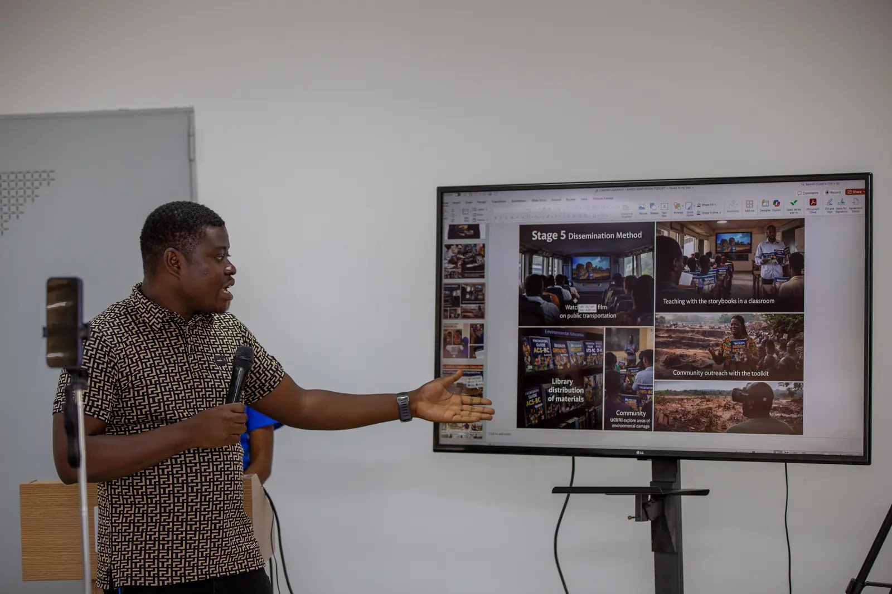
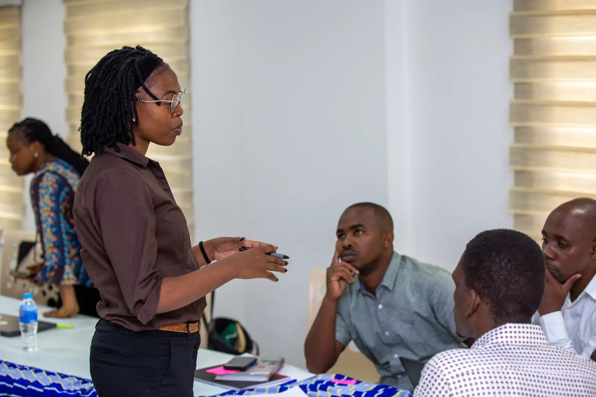
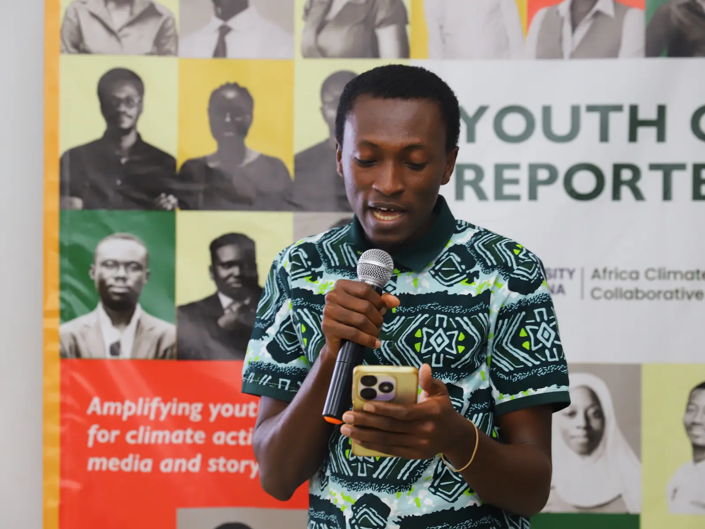
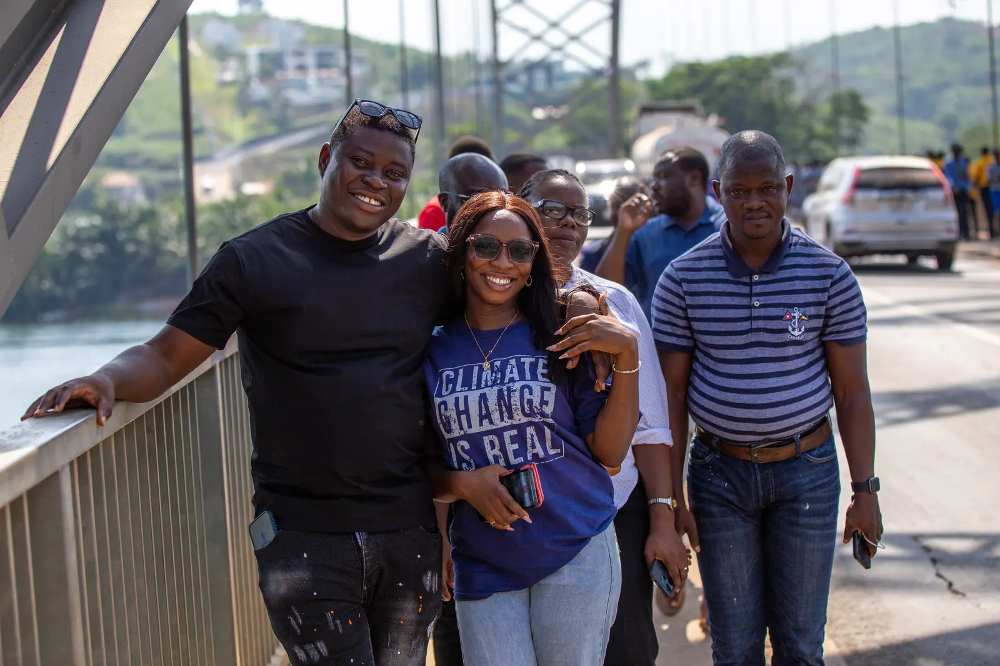
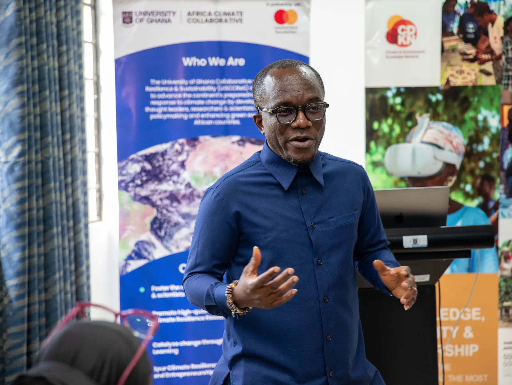

04Programme archive
Seven ways evidence becomes action.
Each programme has its own question, collaborators and route to impact. Together, they form the BTS knowledge-to-action portfolio.

ACTIVATE
Researchers, institutions and creative-technology partners co-create practical adaptation tools.

Climate Activists Programme
Nine residential days of climate science, policy, leadership and advocacy.

EPICC
Climate entrepreneurs, researchers and policy experts build stronger pathways to scale.

CLARE Workshop
Journalists and researchers work together to produce evidence-based climate stories.

Youth Climate Reporters
A new generation of climate journalists learns to report with accuracy and local relevance.

Climate Focus Series
Ghana’s green economy enters public conversation through television, radio and digital.

Climate & Health Consortium
Research on connected climate-health risks is translated for policy and institutional use.